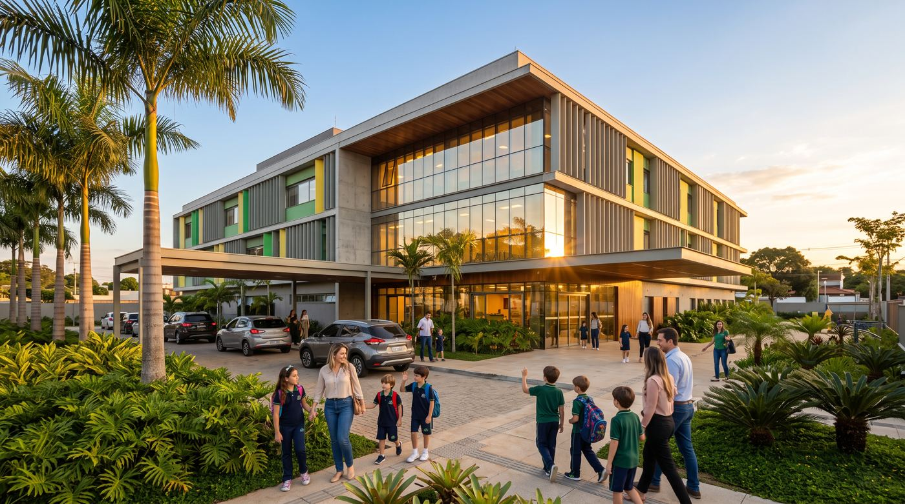
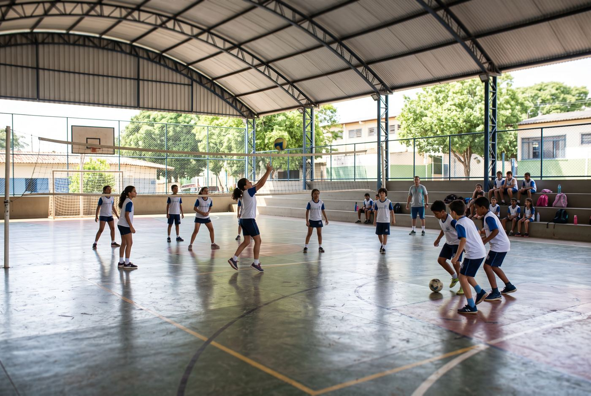
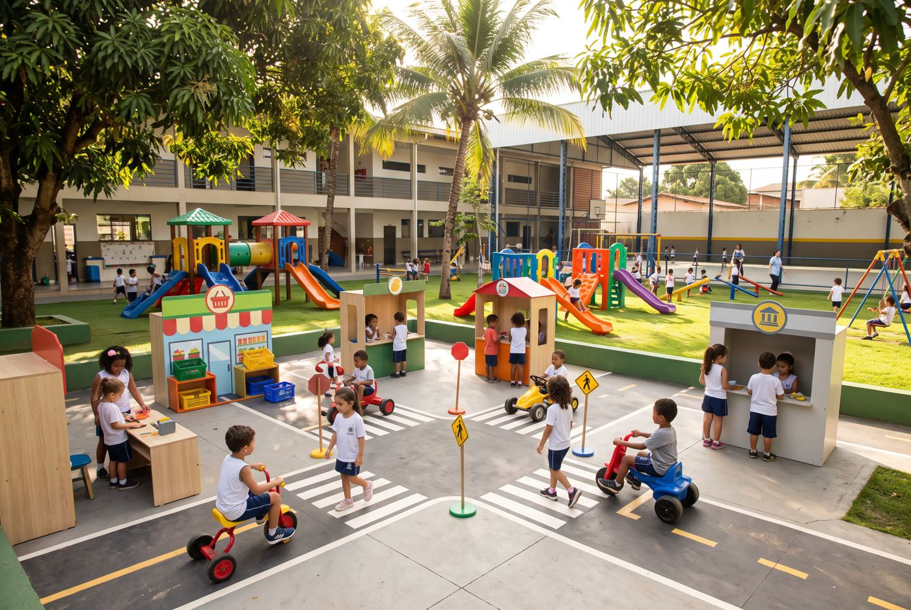
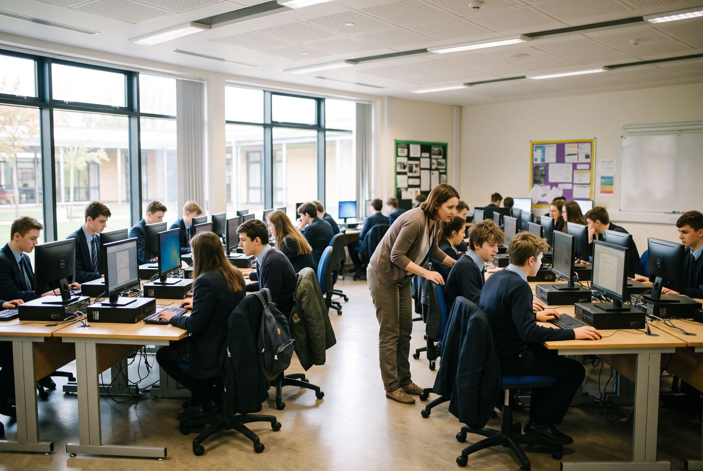

Estacionamento
Para maior comodidade das famílias.

Mais de quatro décadas de experiência unidas à inovação de uma proposta educacional pensada para o futuro.
Quero conhecerUma estrutura que une educação, inovação, acolhimento e desenvolvimento.
Para maior comodidade das famílias.

Para incentivar o movimento e a integração.

Para explorar, brincar e aprender.
Para estimular a criatividade e a inovação.

Para conectar conhecimento e tecnologia.
Para despertar a imaginação e o prazer pela leitura.
E isso é só o começo. Imagens ilustrativas geradas por inteligência artificial.
No Colégio Liderança COC, cada etapa tem uma proposta pensada para a idade e o momento do aluno. Ao longo do caminho, a mesma equipe que conhece seu filho pelo nome acompanha cada conquista.
Vagas limitadas por turma para garantir atenção individual.
Reservar vagaOs primeiros anos são de descoberta. Aqui a criança aprende brincando, com rotina acolhedora, turmas reduzidas e muito contato com a natureza no parque e na Mini Cidade.
Alfabetização sólida e desenvolvimento do raciocínio lógico com o material didático COC, aliado a projetos na Biblioteca e na Sala Maker.
Autonomia, pensamento crítico e tecnologia. O aluno aprende a pesquisar, argumentar e trabalhar em equipe, com professores especialistas em cada área.
Preparação de alto desempenho para o ENEM e os vestibulares, com a metodologia COC e acompanhamento próximo das metas de cada estudante.
Tradição de quem educa há mais de 40 anos, com a força de uma rede nacional de ensino.
Material didático e plataforma digital de um dos grupos educacionais mais tradicionais do país, com mais de 60 anos de história.
Programa bilíngue progressivo, da Educação Infantil ao Ensino Médio, com aulas práticas e imersivas.
Contraturno com almoço, acompanhamento de tarefas, esportes, artes e oficinas maker.
Avaliações contínuas e reuniões periódicas para as famílias acompanharem cada passo do aluno.
Portaria com controle de acesso, câmeras e estacionamento interno para embarque e desembarque.
Projetos de convivência, empatia e cidadania integrados ao currículo, em parceria com as famílias.
Entrada tranquila com professores recebendo os alunos no pátio.
Projetos na Sala Maker, no laboratório ou na Biblioteca.
Cardápio balanceado, acompanhado por nutricionista.
Esportes na quadra, inglês, artes e reforço de estudos.
O que existe por trás de uma escola que está prestes a abrir suas portas? No nosso caso, uma trajetória construída ao longo de mais de quatro décadas, marcada por dedicação, experiência, desafios superados e compromisso com a educação.
O Colégio Liderança COC chega a Barra Velha com um novo nome, uma nova identidade e um grande propósito.
Uma escola se constrói com pessoas, princípios, planejamento e a capacidade de transformar palavras em ações.
Não encontrou o que procurava? Fale com a nossa equipe pelo formulário.
As aulas começam no ano letivo de 2027. As pré-matrículas abrem antes da inauguração, e as famílias cadastradas recebem as datas em primeira mão.
Educação Infantil (a partir dos 2 anos), Ensino Fundamental I e II e Ensino Médio.
Sim. O período integral é opcional e inclui almoço, acompanhamento de tarefas, esportes, inglês e oficinas.
É o material didático e a plataforma digital do grupo COC, usados em escolas de todo o Brasil, com conteúdo atualizado e foco em resultados.
Deixe seus dados no formulário. Vamos agendar uma visita assim que a estrutura estiver pronta para receber as famílias.
Deixe seus dados e receba em primeira mão as novidades sobre matrículas no Colégio Liderança COC.